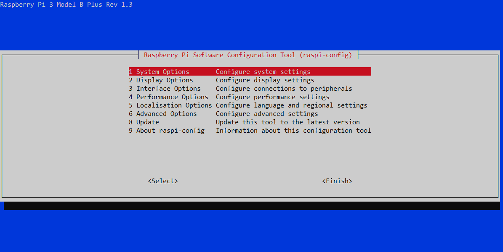
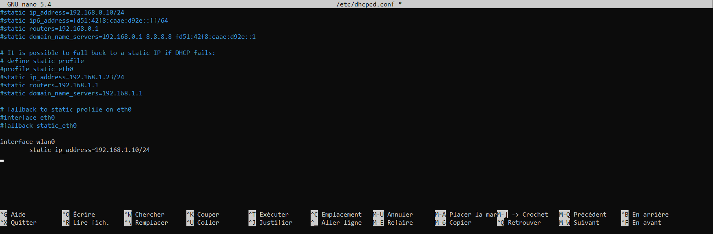
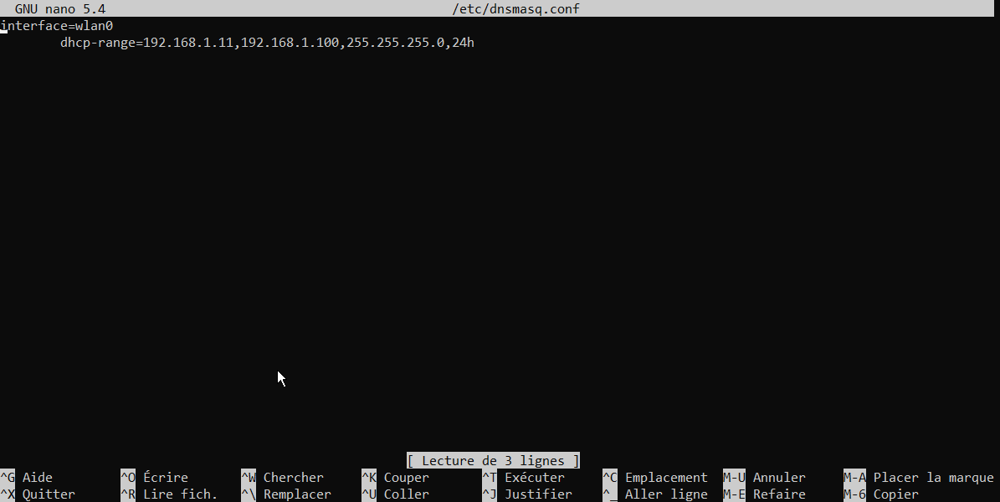
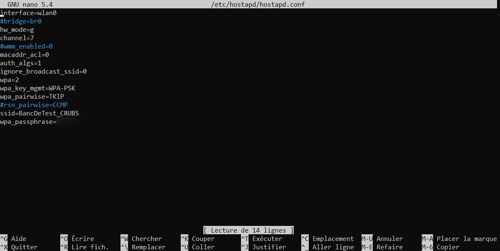

8.3.1. Installation¶
Utilisation de Raspberry Pi Imager (https://www.raspberrypi.com/software/) pour créer une carte SD bootable avec l’OS Raspberry PI OS. Cet OS a l’avantage d’être léger et simple à utiliser.

8.3.1.1. Mise a jour¶
Une fois la PI demarrée, la première chose à faire est de la mettre à jour. Pour cela entrer dans le terminal les commandes suivantes :
sudo apt-get update
sudo apt-get upgrade
sudo apt-get autoremove
sudo reboot
8.3.1.2. Ecran tactile¶
Après cette manipulation l’écran tactile n’était plus reconnu lors du boot de la PI. Nous avons dû modifier un fichier pour résoudre ce problème :
sudo nano /boot/config.txt
Il vous faut maintenant trouver la ligne suivante :
dtoverlay=vc4-kms-v3d
Et la remplacer par :
dtoverlay=vc4-fkms-v3d
{kind=link}
Un nouveau problème apparaît désormais, chacun de vos click sur l’ecran aura une position en X decaler. Pour cela rendez vous dans le menu en haut à gauche > préférence > Screen Configuration. Une nouvelle fenêtre s’ouvre, maintenant cliquez sur Disposition > Screens > Composite-1 et décochez « Active » Aide : https://github.com/raspberrypi/documentation/issues/1018
Maintenant tout devrait fonctionner normalement.
8.3.1.3. Addresse IP statique¶
Afin de pouvoir nous connecter plus facilement en SSH à la PI nous allons déclarer une IP fixe sur l’interface ethernet eth0 et wifi wlan0. Pour cela rendez vous dans le fichier suivant :
sudo nano /etc/network/interfaces
Puis rajouter à la fin du fichier les lignes suivantes :
auto wlan0
iface wlan0 inet static
address 192.168.1.10/24
auto eth0
iface eth0 inet static
address 192.168.2.10/24
Vous pouvez fermer le fichier avec CTRL+X puis Y.
Nous devons maintenant activer le service SSH. Si cela n’est pas déjà fait, rentrez la commande suivante :
sudo raspi-config
Vous arrivez sur une nouvelle interface, vous pouvez naviguer avec les touches flèches et entrer. Interface Options > SSH, on vous demande ensuite si vous voulez activer le SSH, choisissez évidement Oui puis Ok. Vous pourrez quitter la fenêtre avec Echap.
{kind=link}
Vous pouvez maintenant redemarer la PI.
8.3.2. Hotspot WIFI¶
Nous allons maintenant faire en sorte que la PI émette un réseau wifi sur lequel nous pourrons nous connecter, ce dernier ne sera connecté à aucun réseau Internet , mais nous permettra de nous connecter en SSH dessus pour travailler plus facilement.
8.3.2.1. Prerequis¶
Attention l’étape précédente d’ajout d’une IP fixe sur l’interface wlan0 est nécessaire pour le bon fonctionnement de cette partie.
Commençons par installer les services nécessaires :
sudo apt-get install hostapd
sudo apt-get install dnsmasq
Nous allons rapidement nous assurer que ces services seront bien actifs au démarrage puis nous les stoppons le temps de faire notre configuration reseau.
sudo systemctl unmask hostapd.service
sudo systemctl unable hostapd.service
sudo systemctl stop hostapd
sudo systemctl unmask dnsmasq.service
sudo systemctl unable dnsmasq.service
sudo systemctl stop dnsmasq
8.3.2.2. Addresse IP fixe en wifi¶
Rendez vous dans le fichier suivant :
sudo nano /etc/dhcpcd.conf
Puis ajouter les deux lignes suivantes à la fin du fichier. Ces dernières permettent de fixer l’IP de la pi sur l’interface wifi wlan0 pour le reseau wifi.
interface wlan0
static ip_address=192.168.1.10/24
Enregistrez et fermez le fichier avec CTRL+X puis Y.
{kind=link}
Attention l’adresse IP renseignée doit être la même que l’IP fixe déclarée dans le fichier /etc/netowork/interfaces sur l’interface wlan0.
8.3.2.3. Configuration du server DHCP¶
Sauvegardons d’abord le fichier initialement présent.
sudo mv /etc/dnsmasq.conf /etc/dnsmasq.conf.old
Puis créons notre propre serveur grâce au fichier suivant :
sudo nano /etc/dnsmasq.conf
interface=wlan0
dhcp-range=192.168.1.11,192.168.1.100,255.255.255.0,24h
Enregistrez et fermez le fichier avec CTRL+X puis Y.
{kind=link}
8.3.2.4. Parametrage du reseau wifi¶
Paramétrons le réseau wifi dans le fichier suivant :
sudo nano /etc/hostapd/hostapd.conf
interface=wlan0
hw_mode=g
channel=7
macaddr_acl=0
auth_algs=1
ignore_broadcast_ssid=0
wpa=2
wpa_key_mgmt=WPA-PSK
wpa_pairwise=TKIP
ssid=NOM_DU_RESEAU
wpa_passphrase=MOT_DE_PASSE
Avec NOM_DU_RESEAU et MOT_DE_PASSE a compléter selon vos besoins.
{kind=link}
Nous devons maintenant indiquer au système le chemin vers cette configuration. Rendez vous dans le fichier suivant :
sudo nano /etc/default/hostapd
Puis trouvez la ligne #DAEMON_CONF= » » pour la modifier :
DAEMON_CONF="/etc/hostapd/hostapd.conf"
{kind=link}
{kind=link}